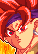

Saudações, jogadores!
Acabamos de expandir o universo de Atisq com a chegada de Evil Gian, trazendo golpes explosivos em área para agitar ainda mais as lutas nas plataformas.
Além disso, novas arenas entraram na rotação — incluindo a Arena Demoníaca, o mapa da Cidade e a Geleira — junto com uma reformulação completa de áudio e melhorias de estabilidade no multiplayer.